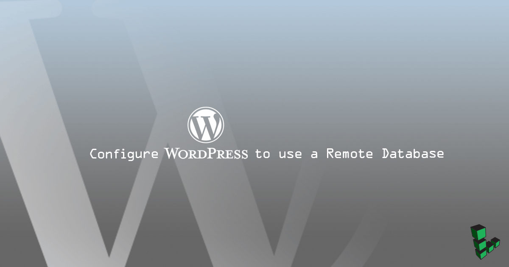
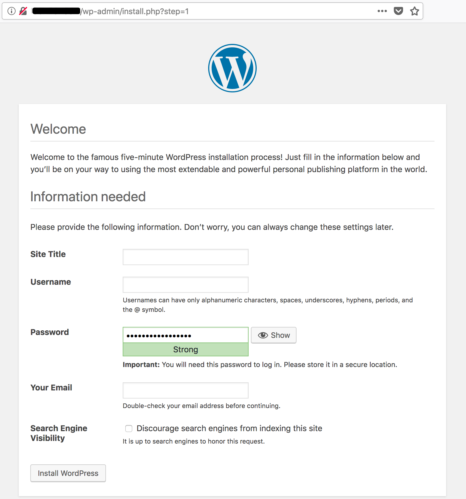

Configure WordPress to use a Remote Database
Updated by Linode Written by Edward Angert

Before You Begin
This guide uses two Linodes in the same data center to communicate via private IP addresses. You will need to configure a LEMP or LAMP stack on one.
Ensure that all packages are up to date.
Follow the Getting Started and Secure your Server guides to create a non-root sudo user.
While the steps to configure an existing database may be similar, this guide is written for a fresh database and WordPress installation. Visit our guide on how to backup an existing database.
Variables Used in This Guide
- Database server: Linode on which the database is installed.
- Web server: Linode on which WordPress is downloaded.
example.com: Your fully qualified domain name (FQDN) or IP address.wordpress: Database name.wpuser: The WordPress client database user.password: SQL database password.192.0.2.100: Database server’s private IP.192.0.2.255: Web server’s private IP.example_user: Local non-root sudo user.203.0.113.15: Web server’s FQDN or IP.
Install MariaDB on its Own Linode
Run these steps on the database server.
Install MariaDB:
sudo apt install mariadb-serverRun the
mysql_secure_installationscript to set a root password and remove unnecessary services. Set a root password and respondyto all of the prompts:sudo mysql_secure_installation
Accept Remote Connections
Change the
bind-addressto the database server’s private IP to configure the MariaDB to accept remote connections:- /etc/mysql/mariadb.conf.d/50-server.cnf
-
1bind-address = 192.0.2.100
Restart MariaDB and allow connections to port
3306through the firewall. This example uses UFW to automatically open the port over both IPv4 and IPv6:sudo systemctl restart mysql sudo ufw allow mysqlLog in to MariaDB as root, create the database and remote user, and grant the remote user access to the database. Replace
192.0.2.255with your web server’s private IP:sudo mysql -u root -p CREATE DATABASE wordpress; CREATE USER 'wpuser'@'localhost' IDENTIFIED BY 'password'; GRANT ALL PRIVILEGES ON wordpress.* TO 'wpuser'@'localhost'; CREATE USER 'wpuser'@'192.0.2.255' IDENTIFIED BY 'password'; GRANT ALL PRIVILEGES ON wordpress.* TO 'wpuser'@'192.0.2.255'; FLUSH PRIVILEGES; exitTest the new user’s local login:
mysql -u wpuser -p status; exit
Connect to the Remote Database from the Web Server
Run these steps on the web server.
The web server should already have MariaDB installed. If it doesn’t, install it. PHP-MySQL is required for WordPress:
sudo apt update && sudo apt install mariadb-client php-mysqlTest remote login with the new remote user. Replace
192.0.2.100with the database Linode’s private IP:mysql -u wpuser -h 192.0.2.100 -p status; exitThe web server can now connect to the remote database.
Configure WordPress to Use a Remote Database
When first installed and configured through the web interface and a local database, WordPress creates a file called wp-config.php. Configure the initial remote database settings.
Navigate to the directory to which WordPress was extracted, copy the sample configuration and set it to use the remote database:
cd /var/www/html/example.com/public_html sudo cp wp-config-sample.php wp-config.phpChange the login variables to match the database and user. Replace
192.0.2.100with the database server’s private IP:- /var/www/html/example.com/public_html/wp-config.php
-
1 2 3 4 5 6 7 8 9 10 11/** The name of the database for WordPress */ define('DB_NAME', 'wordpress'); /** MySQL database username */ define('DB_USER', 'wpuser'); /** MySQL database password */ define('DB_PASSWORD', 'password'); /** MySQL hostname */ define('DB_HOST', '192.0.2.100');
Add Security Keys to Secure wp-admin Logins
Use the WordPress Security Key Generator to create randomized, complicated hashes that WordPress will use to encrypt login data. Copy the result and replace the matching section in wp-config.php:
- /var/www/html/example.com/public_html/wp-config.php
-
1 2 3 4 5 6 7 8 9 10 11 12 13 14 15 16 17 18/**#@+ * Authentication Unique Keys and Salts. * * Change these to different unique phrases! * You can generate these using the {@link https://api.wordpress.org/secret-key/1.1/salt/ WordPress.org secret-key service} * You can change these at any point in time to invalidate all existing cookies. This will force all users to have to log in again. * * @since 2.6.0 */ define('AUTH_KEY', 'put your unique phrase here'); define('SECURE_AUTH_KEY', 'put your unique phrase here'); define('LOGGED_IN_KEY', 'put your unique phrase here'); define('NONCE_KEY', 'put your unique phrase here'); define('AUTH_SALT', 'put your unique phrase here'); define('SECURE_AUTH_SALT', 'put your unique phrase here'); define('LOGGED_IN_SALT', 'put your unique phrase here'); define('NONCE_SALT', 'put your unique phrase here'); /**#@-*/
Secure WordPress Database Traffic with SSL
On the web server
Create a directory to receive the certificates created in this section:
mkdir ~/certsOn the database server
Create and switch to a directory for generating keys and certificates:
mkdir ~/certs && cd ~/certsGenerate a CA key and create the certificate and private key. Respond to the prompts as appropriate. The key in this example expires in 100 years. Change the
-days 36500value in this and the following steps to set the certificates to expire as needed:sudo openssl genrsa 4096 > ca-key.pem sudo openssl req -new -x509 -nodes -days 36500 -key ca-key.pem -out cacert.pemYou are about to be asked to enter information that will be incorporated into your certificate request. What you are about to enter is what is called a Distinguished Name or a DN. There are quite a few fields but you can leave some blank For some fields there will be a default value, If you enter '.', the field will be left blank. ----- Country Name (2 letter code) [AU]:US State or Province Name (full name) [Some-State]:PA Locality Name (eg, city) []:Phila Organization Name (eg, company) [Internet Widgits Pty Ltd]: Organizational Unit Name (eg, section) []: Common Name (e.g. server FQDN or YOUR name) []:MariaDB Email Address []:Create a server certificate and write the RSA key. The
Common Nameshould be your web server’s FQDN or IP address:sudo openssl req -newkey rsa:4096 -days 36500 -nodes -keyout server-key.pem -out server-req.pemGenerating a 4096 bit RSA private key ......................+++ .............................+++ writing new private key to 'server-key.pem' ----- You are about to be asked to enter information that will be incorporated into your certificate request. What you are about to enter is what is called a Distinguished Name or a DN. There are quite a few fields but you can leave some blank For some fields there will be a default value, If you enter '.', the field will be left blank. ----- Country Name (2 letter code) [AU]:US State or Province Name (full name) [Some-State]:PA Locality Name (eg, city) []:Phila Organization Name (eg, company) [Internet Widgits Pty Ltd]: Organizational Unit Name (eg, section) []: Common Name (e.g. server FQDN or YOUR name) []:203.0.113.15 Email Address []: Please enter the following 'extra' attributes to be sent with your certificate request A challenge password []: An optional company name []:sudo openssl rsa -in server-key.pem -out server-key.pemSign the certificate:
sudo openssl x509 -req -in server-req.pem -days 36500 -CA cacert.pem -CAkey ca-key.pem -set_serial 01 -out server-cert.pemMove the keys and certificate to a permanent location:
sudo mkdir /etc/mysql/ssl sudo mv *.* /etc/mysql/ssl && cd /etc/mysql/sslGenerate a client key. Respond to the prompts as appropriate and set the
Common Nameto your web server’s FQDN or IP address:sudo openssl req -newkey rsa:2048 -days 36500 -nodes -keyout client-key.pem -out client-req.pemGenerating a 4096 bit RSA private key ....................+++ ............................................................................................+++ writing new private key to 'client-key.pem' ----- You are about to be asked to enter information that will be incorporated into your certificate request. What you are about to enter is what is called a Distinguished Name or a DN. There are quite a few fields but you can leave some blank For some fields there will be a default value, If you enter '.', the field will be left blank. ----- Country Name (2 letter code) [AU]:US State or Province Name (full name) [Some-State]:PA Locality Name (eg, city) []:Phila Organization Name (eg, company) [Internet Widgits Pty Ltd]: Organizational Unit Name (eg, section) []: Common Name (e.g. server FQDN or YOUR name) []:203.0.113.15 Email Address []: Please enter the following 'extra' attributes to be sent with your certificate request A challenge password []: An optional company name []:Write the RSA key:
sudo openssl rsa -in client-key.pem -out client-key.pemSign the client certificate:
sudo openssl x509 -req -in client-req.pem -days 36500 -CA cacert.pem -CAkey ca-key.pem -set_serial 01 -out client-cert.pemVerify the certificates:
openssl verify -CAfile cacert.pem server-cert.pem client-cert.pemConfigure the MariaDB server to use the certificates. Find the following lines and remove the
#to uncomment the certificate locations. Modify the paths to match:- /etc/mysql/mariadb.conf.d/50-server.cnf
-
1 2 3ssl-ca=/etc/mysql/ssl/cacert.pem ssl-cert=/etc/mysql/ssl/server-cert.pem ssl-key=/etc/mysql/ssl/server-key.pem
Log in to MariaDB and require SSL for all logins to the database. Replace
192.0.2.255with the web server Linode’s private IP:sudo mysql -u root -p GRANT ALL PRIVILEGES ON wordpress.* TO 'wpuser'@'192.0.2.255' REQUIRE SSL; FLUSH PRIVILEGES; exitRestart MariaDB:
sudo systemctl restart mysqlCopy the certificates and key to the web server. Replace
example_userwith the web server’s user and192.0.2.255with the web server’s private IP:scp cacert.pem client-cert.pem client-key.pem example_user@192.0.2.255:~/certs
On the web server
Create the directory and move the certificates and key to
/etc/mysql/ssl:sudo mkdir /etc/mysql/ssl && sudo mv ~/certs/*.* /etc/mysql/sslConfigure the web server’s MariaDB client to use SSL. Find the
[mysql]section and add locations for the certificates and key:- /etc/mysql/mariadb.conf.d/50-mysql-clients.cnf
-
1 2 3 4[mysql] ssl-ca=/etc/mysql/ssl/cacert.pem ssl-cert=/etc/mysql/ssl/client-cert.pem ssl-key=/etc/mysql/ssl/client-key.pem
Note
If the web server uses MySQL you can find the configuration file in/etc/mysql/mysql.conf.d/mysqld.cnf.Log in to the remote database to test the login over SSL:
mysql -u wpuser -h 192.0.2.100 -pCheck the status:
status;Exit MariaDB:
exitAdd a directive before the remote database information in
wp-configwhich forces WordPress to use SSL for the database connection:- /var/www/html/example.com/public_html/wp-config.php
-
1 2 3 4 5 6 7 8 9 10 11 12 13 14 15... define( 'MYSQL_CLIENT_FLAGS', MYSQLI_CLIENT_SSL ); /** The name of the database for WordPress */ define('DB_NAME', 'wordpress'); /** MySQL database username */ define('DB_USER', 'wpuser'); /** MySQL database password */ define('DB_PASSWORD', 'password'); /** MySQL hostname */ define('DB_HOST', '192.0.2.100'); ...
Complete the WordPress Installation
Access the WordPress installation interface through wp-admin. Use a browser to navigate to example.com/wp-admin. If the database connection is successful, you’ll see the installation screen:

Next Steps
Now that the database is configured to communicate over a secure connection, consider using SSL/TLS for the web server itself. Our guide covering TLS on NGINX details some best practices for securing NGINX and web servers in general. Visit the SSL Certificates section of Linode Docs for information on other servers and Linux distributions.
More Information
You may wish to consult the following resources for additional information on this topic. While these are provided in the hope that they will be useful, please note that we cannot vouch for the accuracy or timeliness of externally hosted materials.
Join our Community
Find answers, ask questions, and help others.
This guide is published under a CC BY-ND 4.0 license.